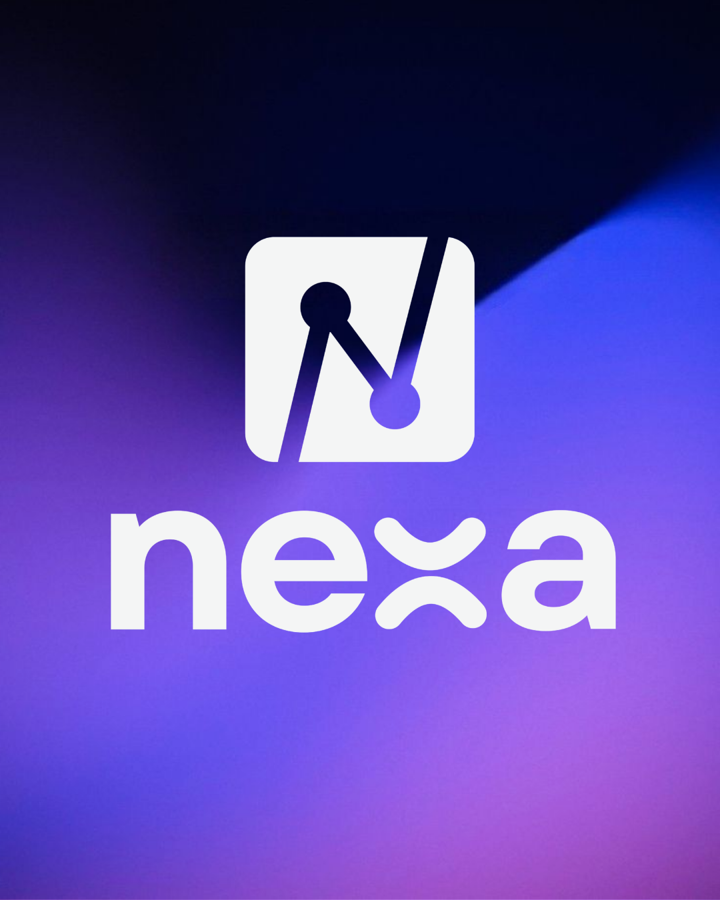
About me
Technology for people, and the planet.
I’m a software development student and the founder of Nexa Global Impact, building accessible digital solutions for underserved communities, grassroots organizations and animal shelters. I believe technology and AI can help societies anticipate and recover from climate-related threats.
My work brings together AI for climate, disaster risk reduction, digital inclusion, youth leadership and STEM education.
AI for ClimateSoftware DevelopmentDisaster Risk ReductionSocial InnovationMentoring
All my orbits
The interests, values and causes that shape the way I build technology and lead.
AI for ClimateDisaster ResilienceDigital InclusionAccessibilityYouth LeadershipSTEM EducationMentorshipSocial Innovation
Selected work
Projects that orbit impact
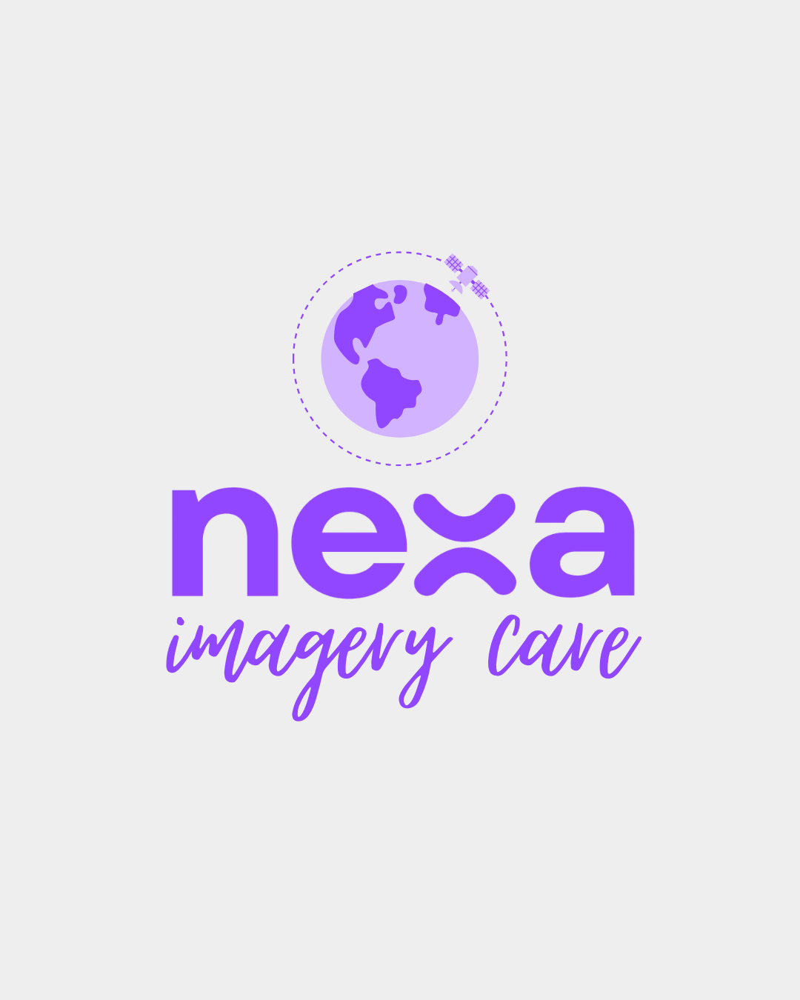
AI Early-Warning Framework
Computer vision with NASA Earthdata and Copernicus imagery · GAUC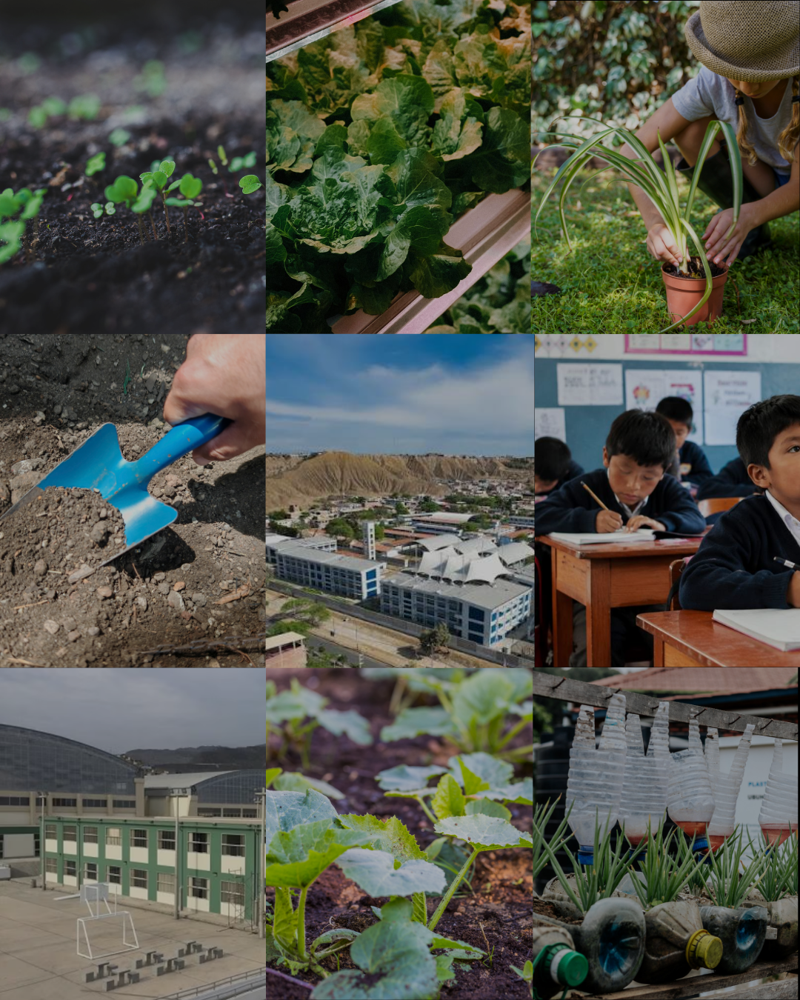
Eco Warmi
Climate education for adolescents in vulnerable schools across Lima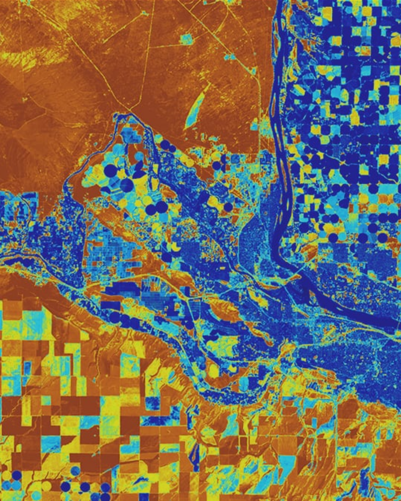
TechHer Revolution
AI and NASA open-data keynotes for girls aged 13–17 · Australian Embassy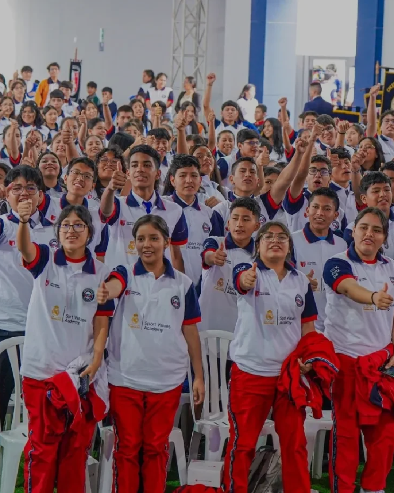
School of Leaders
Virtual STEM education reaching 1000+ children across Peru · Leadership AwardGallery
Moments & missions
Journey
Missions & experience
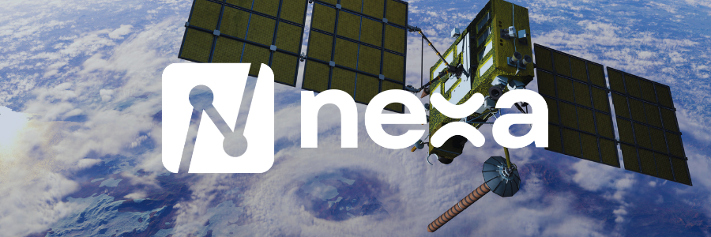
May 2026 – Present · Lima
Founder & Project Lead
Nexa Global Impact
Building accessible digital solutions for underserved communities, shelters and grassroots organizations worldwide.
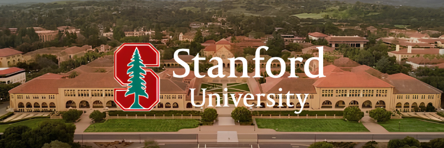
Oct 2026 – Present · Remote
Section Leader
Stanford University · Code in Place
Mentoring international students in Python, leading weekly sections and reviewing assignments.
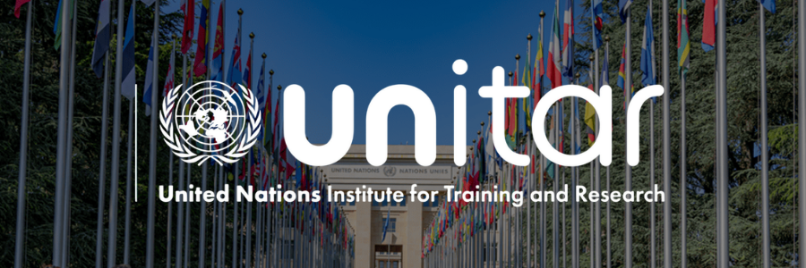
Sep 2026 – Present · Hiroshima
UNITAR Leadership Fellow
Women’s Leadership in Disaster Risk Reduction
One of 500 participants worldwide, developing DRR frameworks aligned with the Sendai Framework.
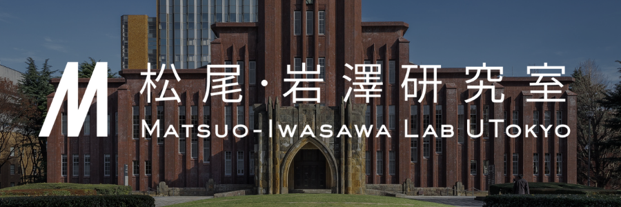
Sep 2026 – Present · Tokyo
Selected Participant
GCI World 2026 · U-Tokyo Matsuo-Iwasawa Lab
Hands-on data science and machine learning with Python, SQL and time series analysis.
Aug 2026 – Present · Remote
Climate x Scholar
Global Alliance of Universities on Climate
Developing an AI-driven early-warning framework for vulnerable communities.
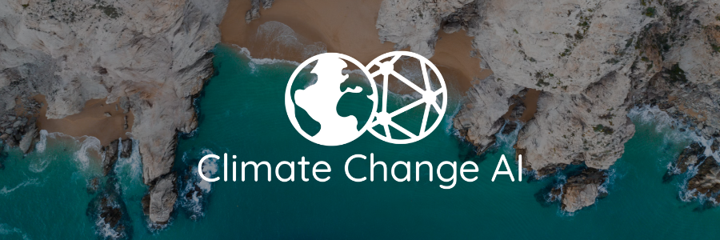
Jul 2026 – Present · Toronto
Research Trainee
Climate Change AI Summer School
Applying machine learning to environmental data and sustainable technologies.
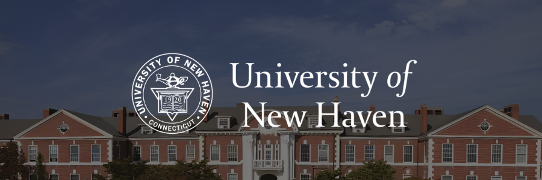
Aug 2026 – Present · Remote
Board Member
University of New Haven · Women in Leadership with AI-Driven Engagement Executive Program
Advising on responsible AI, innovation, and technology leadership to support socially impactful initiatives.
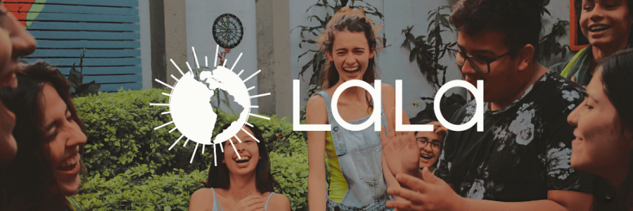
Aug 2026 – Present · Remote
Leadership Mentor
Latin American Leadership Academy (LALA) · LALA 2026.2 Mentorship Program
Mentoring students in the English-speaking cohort through goal-setting, leadership development, and meaningful personal growth conversations.
Honors
Awards & recognition
Aug 2025 · ISIL
Top Graduate
Class representative, with the highest GPA across all programs of the institution.
Aug 2025 · ISIL
Academic Excellence Award
Highest performance in Software Development, GPA 19.60/20.
2026 · Aspire Institute
Aspire Leaders Program
Graduated with a perfect 100/100 and advanced to the Extended Leadership phase.
2021 · Universidad César Vallejo
Outstanding Leadership Award
STEM Educational Project that reached 1000+ children and adolescents.
Dec 2021
Valedictorian
First place in the graduating class, I.E.M. N° 72 San Martín de Porres.
2026 · UNITAR
Global Selection
Chosen among thousands of applicants as one of 500 fellows worldwide.
Education
Apr 2026 – Dec 2026
Aspire Leaders & Extended Leadership
Aspire Institute
Leadership curriculum by Harvard Business School faculty, now focused on social entrepreneurship and scaling Nexa Global Impact.
2022 – 2025
Technical Degree in Software Development
ISIL Aprende Haciendo
Ranked first in the program with a GPA of 19.60/20.
Leadership & volunteering
Oct 2024 – Present
Tech Speaker & Project Area Member
Kusisqa Perú
Keynotes on AI and NASA Earth data, Eco Warmi project lead, and youth advocate for women in STEM.
Jul 2026 – Present · Peru
Campus Lead
Aspire Institute
Driving outreach and mentoring first-generation applicants to the Aspire Leaders Program.
Certifications
Licenses & certifications
NASA · ARSET01
Hyperspectral Data for Land and Coastal Systems
Advanced NASA ARSET training on hyperspectral data, satellite and airborne sensors, and multi-platform data access. Applied high-resolution remote sensing to vegetation, forest health, wildfire tracking, precision agriculture and coastal monitoring.
100% score
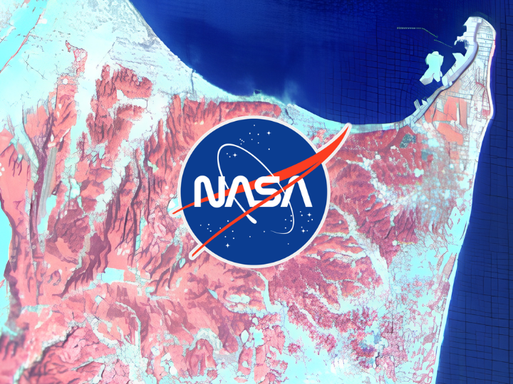
NASA · ARSET02
Developing Sustainable Earth Science Applications Module 3 · An Experienced Researcher’s Discovery
Explored the five-step Earth Science Applications Pathway, from concept development to user adoption, with strategies for collaboration, communication, project management and impact assessment.
100% score
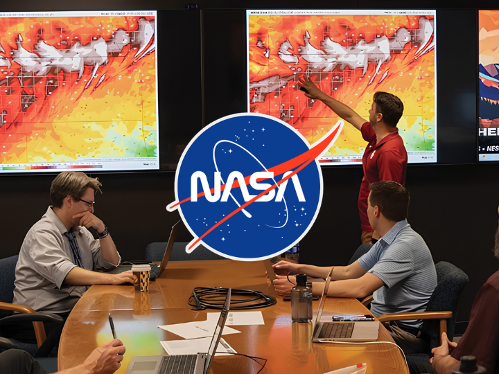
NASA · ARSET03
Developing Sustainable Earth Science Applications Module 2 · A Community Partner’s Journey
Explored partner engagement, communications and project management strategies for developing sustainable Earth science applications with meaningful societal impact.
100% score
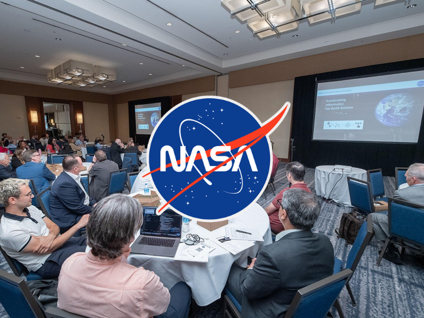
NASA · ARSET04
Developing Sustainable Earth Science Applications Module 1 · An Early Career Experience
Explored project management, team collaboration, partner engagement, and monitoring and evaluation to build Earth observation applications that address climate change and other societal challenges.
100% score
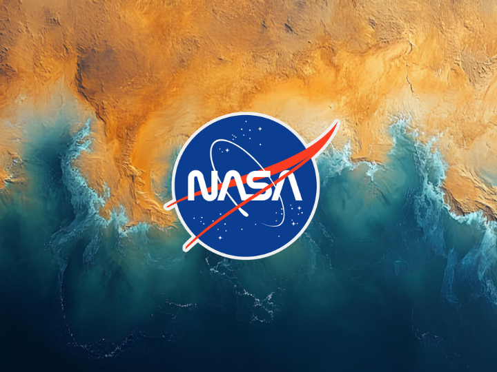
NASA · ARSET05
Fundamentals of Remote Sensing
Mastered the physical principles of satellite Earth observation, electromagnetic radiation and orbital mechanics. Hands-on interpretation of multispectral imagery and access to petabyte-scale data via NASA Earthdata, USGS EROS and Copernicus.
100% score
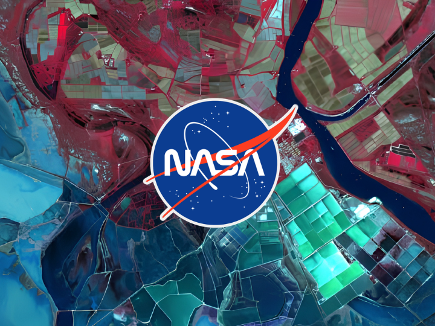
UNESCO · LG AI Research06
Global MOOC on the Ethics of AI
Official certification on international regulatory frameworks, ethical governance of algorithmic systems and bias mitigation strategies in artificial intelligence.
100% score
Cisco Networking Academy07
IoT Fundamentals Connecting Things
IoT device configuration, connectivity and cloud integration, with practical troubleshooting, cybersecurity principles and real-world applications in smart homes, smart cities and industry.
100% score
Cisco Networking Academy08
IT Essentials PC Hardware and Software
IT support and administration: computer assembly and troubleshooting, Windows, Linux and macOS administration, networking, mobile devices, cloud services and cybersecurity fundamentals.
100% score
Aspire Institute09
Aspire Leaders Program
Verified certificate for 40 hours of intensive coursework in critical thinking, cross-cultural communication, global leadership and high-value social impact within an international community.
100% score
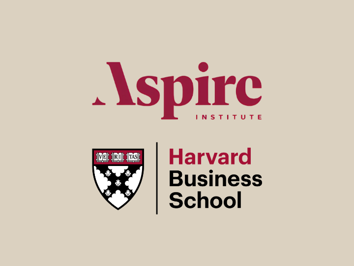
Voices
What people say
Gianna was one of the people who made the Aspire experience more meaningful for many of us. As a Campus Leader, she was always willing to help, answer questions, and connect participants with opportunities they might otherwise have missed. What stood out most was her genuine interest in supporting others' growth and success.
LO
Luis Orellana
Aspire Leaders Program
Working with Gianna through the Aspire community was a great experience. She brings positive energy, leadership, and a strong sense of responsibility to everything she does. She has a unique ability to bring people together and create a welcoming environment where everyone feels encouraged to contribute.
AB
Andrea Balcarcel
Aspire Leaders Program
Gianna is the kind of person who combines curiosity, intelligence, and action. During our time in the LALA community, I was always impressed by how she transformed ideas into real initiatives and how naturally she shared her knowledge with others. Her commitment to learning and creating impact is truly inspiring.
AK
Amanda Koyle
Latin American Leadership Academy (LALA)
It was a pleasure collaborating with Gianna through LALA. She consistently approached challenges with creativity and determination, and she always looked for ways to help others succeed alongside her.
RD
Riley Downs
Latin American Leadership Academy (LALA)
I had the opportunity to attend sessions taught by Gianna, and what I appreciated most was her ability to explain complex topics in a simple and engaging way. She encouraged participation, welcomed questions, and created an environment where students felt comfortable learning and sharing their ideas. Her passion for education is evident in every class she leads.
AE
Arturo Espinoza
Leadership School, Universidad César Vallejo
Working with Gianna at Teach Revolution was a wonderful experience. Her presentations on artificial intelligence, satellite imagery, and climate change demonstrated not only impressive technical knowledge but also an exceptional ability to make these topics accessible to diverse audiences. She has a rare talent for turning complex scientific concepts into inspiring conversations about the future.
ZL
Zélie Lessieur
Teach Revolution
Collaborating with Gianna at Nexa has shown me what mission-driven leadership looks like. She combines technical expertise with a genuine commitment to social impact, always keeping people and purpose at the center of her work. Her vision inspires those around her to think bigger and contribute meaningfully to the communities we serve.
LB
Larissa Beiriz
Nexa Global Impact
I had the pleasure of organizing an online event for GAUC with Gianna. She collaborated with me exceptionally well and delivered an excellent presentation on how to use artificial intelligence and NASA satellite data to predict future climate changes and weather patterns, as well as their broader impact. Her contributions were both informative and inspiring. I highly recommend Gianna for future work and collaborations.
H
Hawaesha
Climate X Leadership
Working with Gianna means working with someone who combines strong technical skills with a proactive attitude. Any team would be lucky to have her on board to develop digital solutions with a meaningful purpose.
SF
Shiza Fatima
UI/UX Designer collaborator
Thank you so much, Gianna! Your guidance as a mentor at LALA was incredibly helpful. Your questions were excellent—they prompted me to reflect on things I hadn’t thought about or taken the time to explore in a long time 🫶🏼🫶🏼
MS
Myrahis Sanluis Cerezo
Latin American Leadership Academy (LALA)